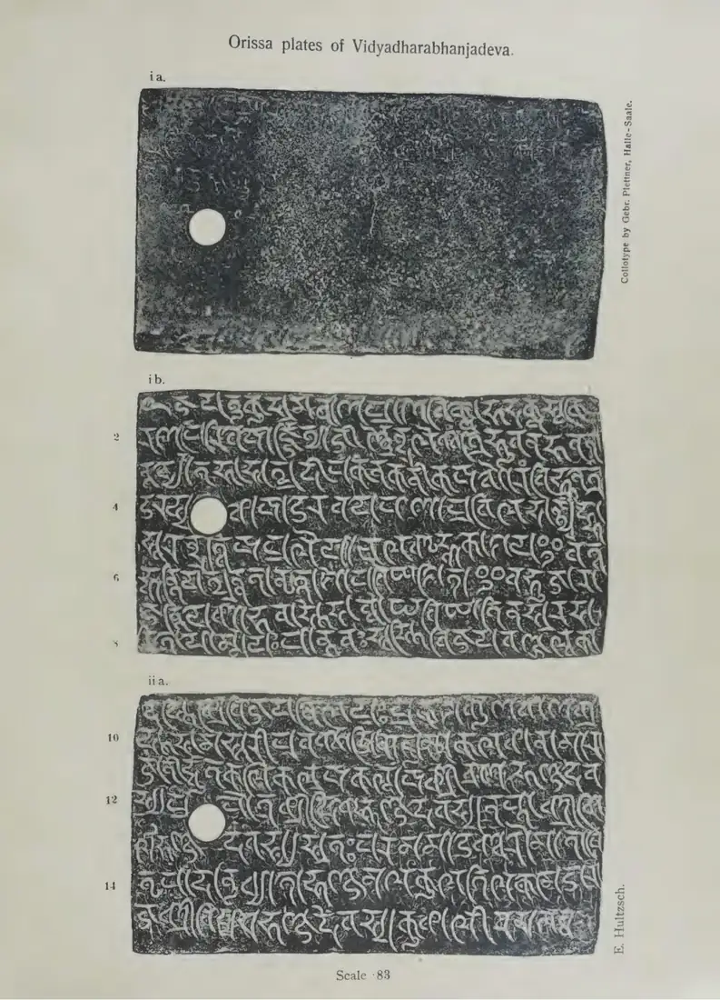
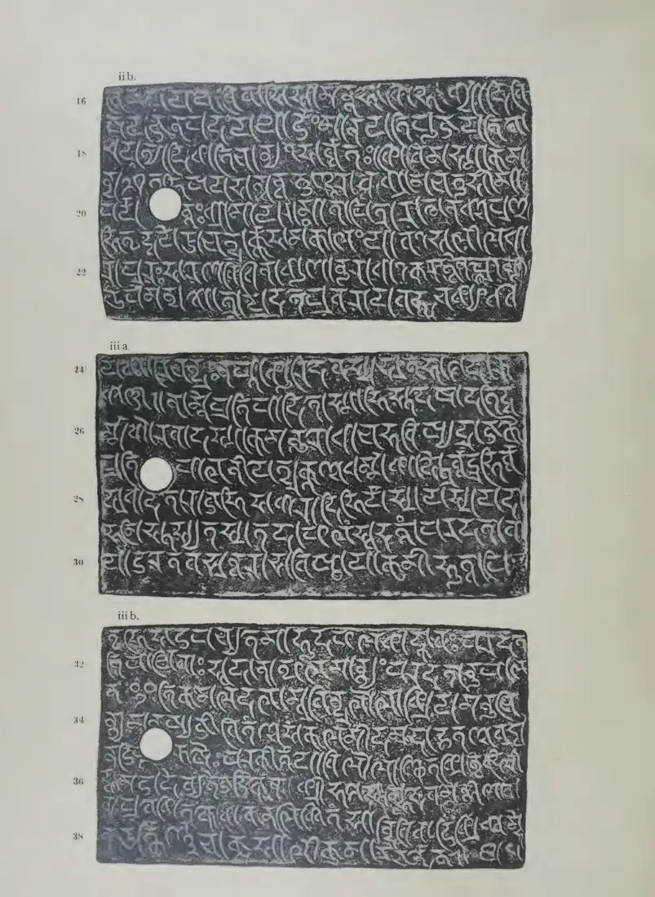

Orissa plates of Vidyádharabhañjadéva
ORISSA PLATES OF VIDYADHARABHANJADEVA.
BY THE LATE PROFESSOR F. KIELHORN, C.I.E.; GÖTTINGEN.
There is no information as to where or when these plates were first obtained. In 1887 they belonged to Mr. C. T. Metcalfe, Commissioner of the Orissa Division, and the inscription which is engraved on them was published in that year, with a facsimile, by the late Dr. Râjèndralâl Mitra, in the Journ. As. Soc. Beng., Vol. LVI. Part I. p. 154 ff. In November 1895 the plates were presented by the Commissioner of Orissa, through Mr. C. L. Griesbach, to the Asiatic Society of Bengal, and they have now been entrusted to me by Dr. Hoernle, with the request to re-edit the inscription.
There are three substantial copper-plates, the edges of which are slightly raised, and of which each measures between and long by between and high. They slide on a copper ring, which passes through a hole, which is about distant from the middle of
1 Read -ôchchhinna-.
2 Read -srl-.
3 Read -kavaṇś-.
4 Instead of this ta- the Chammak and Siwanî grants of Pravarasêna II. have ti-, which seems to me preferable.
5 Here some akshara (perhaps the initial i) was engraved, but has been erased.
6 The reading is doubtful. The first akshara of the line is vi, the superscript i of which, though faint, is distinctly visible in the original; and the second appears to be svâ. The third akshara looks more like yâ than sd, and is followed by a sign which looks like a form of final m, and has probably been struck out. The da and what follows is clear.
7 Read -vaṇśasṛiyaḥ.
8 Read Kôsala-.
9 Perhaps Maikalâ- has actually been engraved; read Mékala-.
10 Read °paty-abhyarchchita-.
11 Read -praṇatâriṣdasanasya (?).
12 Read -srl-.
13 Read °bhâta-.
14 Here again there is a mark which looks like part of the visarga.
15 Read ni(?)magna-vaṇśasy-.
19 Read -srl-.
17 This final t, the sign for which is very small, is really visible in the original plate. In Gupta Insor. p. 237, I. 17, the text has vachand [t*].
18 Read °santakâs-, and compare above, Vol. III. p. 261, I. 13.
the proper right margin of each plate. The ring, which had already been cut when the plates came into my hands, is between and thick and about 3" in diameter, and on to it is soldered a roughly circular metal seal, between and in diameter. The seal contains in relief on a countersunk surface, in the upper half, a couching lion facing to the proper right, and in the lower half the legend
śrí-Vidyádhara-
bhañjadėvasya
in northern characters which are between and high.
Before the plates were used for the grant now engraved on them, they had already served for another grant, the four last lines of which, though faint, are almost completely legible on the first sile of the first plate, and of the writing of which more or less distinct traces remain also on the other sides of the plates. The characters of this earlier grant belong to what I have elsewhere1 called the Gañjām variety of the northern alphabet; and the lines with which it ended, compared with the end of the Gumsūr grant2 of Nētribhañja, published in Journ. As. Soc. Beng. Vol. VI. p. 669 f. and Plate xxxiii., would seem to show that the grant was issued by a chief of the same family. The four lines (on the first side of the first plate), so far as I am able to read them, are:—
L. 1. Svayam=ádishtô rájñâ dútakô=tra [Mâr]tarnđaĵ || Likhitarinñ-cha3
sândhivi-
2. grahika-Arkka[dêvêna]4 || Lâñchhitarn [râ]jñí-śrí-Mânikya-mahâdê-
3. vyâ || Utkîrnṇam ch=âksha[sâ]li-Kumâra[dattêna] || 5samvat . . .
4. di6 . . . ||
The grant now recorded on these plates is engraved on the second side of the first plate and on both sides of the two others. The engraving is deep and well done, and in a perfect state of preservation. In three places (in lines 10, 22 and 35) there is some doubt about the actual wording of the text, either because the engraver altered what he had originally engraved, or because portions of the letters of the earlier grant spoken of above are mixed up with the new writing; the rest may be read without any difficulty. The size of the letters is about . The characters belong to that variety of the northern alphabet which we find, e.g. on the Buguđa plates of Mâdhavavarman, treated of above, Vol. VII. p. 101 f. Of the consonant signs the most characteristic are those for h7 (e.g. in Harasya Šêshâhêr=, l. 4), t and tĵ (e.g. in prakata-, l. 9, and -vighattitâ, l. 6), and n (e.g. in -vâna-prâna-, l. 1), of which the last, in combination with palatals, also serves for the palatal nasal (e.g. in Bhañjámala8, l. 14, =uktañ-cha, l. 27, and lâñchhitam, l. 35). Among other conjuncts attention may be drawn to the signs for ksh, gg, gbh,
1 See above, Vol. VII., p. 101.
2 The published text, which was furnished to Mr. Prinsep by Kamalâkânta Vidyâlarnkâra, is quite untrust-worthy. According to Mr. Prinsep's lithograph of Lieutenant Kittoe's copy, the passage with which we are concerned here, so far as I can make it out, would be svayam=ádishtô rájñâ dútakô=tra bhaṭṭa-śrí-Stambhadêvaĵ likhitañ-cha sândhivigrahinâ Kâ[kka]kêna utkîrnṇa[m] ch=âkshasâli-Durggadêvêna || lâñchitañ . . . . samvat (?) Mâgha-šudi . . . .
3 Read likhitañ-cha.
4 Read grahik-Árkka9.
5 Read samvat; the three aksharas by which this word is followed are illegible.
6 This di is followed by a sign which possibly is a letter-numeral for 10; and before the sign of punctuation there is another sign which looks like the symbol for óm. The two signs show fairly well in the accompanying facsimile. I may add that there are letter-numerals also in the last line of the Bâmanghât grant of Raṇabhañja, published with a facsimile in Journ. As. Soc. Beng. Vol. XL. Part I. p. 165 f., and in lines 35 and 36 of one of the Gañjām grants of Danđimahâdêvî, above, Vol. VI. p. 139 and Plate.
7 The same sign for h (which is not given by our palaeographic Tables) we find in the Buguđa plates of Mâdhavavarman, in the Gumsūr plates of Nētribhañja, and on the second side of the plate of Danđimabâdêvî, above, Vol. VI. p. 138. It was also used in the grant originally engraved on these plates. A similar form of h we find in several varieties of the southern alphabet.
dbh and mbh (e.g. in -vikshóbha-daksham, l. 1, °vargga, l. 10, -Digbhañjadívasya, l. 12, =udbhá at the end of line 4, and -Stambhadéva, l. 36). There is a special sign for final t, in =ínyat, l. 18, nyat, at the commencement of line 19, yávat, l. 21, and °rúdhát for °ródhát, l. 22. Of initial vowels the text contains orly a (for á), é, u and é, in achandrá, l. 21, íva, ll. 5 and 6, iti, l. 33, Upamany [u]-, l. 23, urtkirṇna, l. 38, and étad, l. 19. As regards medial vowels, á is sometimes denoted by a short superscript stroke or by a small hook on the right of the consonant-sign, as in lúbhañja° at the commencement of line 13, and in Bhañjámala, l. 14; and there are two signs1 of the subscript u, one of which may be seen e.g. in jayatu, l. 1, and bhuvana, l. 2, and the other in -sura, l. 7, -rípu, l. 10, Vañjulvaká, l. 8, and =vvahubhir, l. 27, etc.; the former of the two signs is used also to denote medial ú, for which there is no separate sign in these plates. Two forms of medial é may be seen e.g. in Śésháhér=a(i)va yé, l. 4, and pra(prá)léyáchala, l. 5; and similarly two forms of medial ó, e.g. in kírttayó víló, l. 35. The sign of anusvára is sometimes placed after the consonant-sign, as in 2pudam̄ yathirchū, l. 17. The signs of viráma and avagraha do not occur, and a sign of punctuation is found only in lines 20 and 25 (where in either case it is out of place) and at the end of the grant. The language of the inscription is Sanskrit. There are two verses in lines 1-8, and four imprecatory verses in lines 27-35; the rest of the text is in prose. As regards orthography, the sign for v denotes both v and b; visarya at the end of a word is ten times omitted; and single consonants are used instead of double ones in chatusimá- for chatussimá-, l. 19, =anuródhú cha for =anuródhách=cha, l. 26, and five or six times in the words data and dati for datta and datti (lines 25, 28, 29, 31, 32 and perhaps 23). There is besides some confusion of the short and long vowels, especially in the case of i and í, where í is used instead of i no less than nine times (e.g. in níkasha, l. 3, rípu, l. 10, salilu, l. 21, etc.); and ú, as has been already stated, is everywhere written by the sign for u. A few times the writer or engraver has omitted an akshara, as in Vidyúdhabhañja° for Vidyúdharabhañja, l. 15, the chief name of the inscription which is correctly given on the seal; and altogether the grant has been written rather carelessly.
The inscription is one of the devout worshipper of Mahésvara(Šiva), the ornament of the spotless family of the Bhañjas,2 the Muhviríja Vidyádharabhañjadéva, also called king Dharmakalaśa(?), who was a son of Šilábhañjadéva,3 grandson of Digbhañjadéva,4 and great-grandson of Raṇabhañjadéva; and its object is to record a grant which was issued by the king from Vañjulvaka.5 Like the Gumsúr grant of Nétribhañjadéva Kalyápakalaśa, it opens with two verses which glorify the (third) eye of Hara (Šiva) and invoke the protection of the waves of the divine Gaṅgá. In lines 15-27 the king informs the Sámuntas, Bhógins6 and others, the [lords of] vishayas, and the people generally who dwell in the Ramalavva, vishaya, that with pouring out of water he gave the village of Tuṇduráva in that district,
1 Which of the two signs is used, depends on the consonant to which the sign is attached; thus; k and n always take the curve-shaped sign and p and s always the straight or hook-shaped sign. In line 17, where the curve-shaped u is attached to p, the akshara intended to be denoted is pú (of pújayati), not pu; the same remark applies to the u of nírddhuta° (for nírddhúta) in line 11. But in the case of bhu and bhd, u and d are both denoted by the same (curve-shaped) sign.
2 Compare e.g. Gaṅgámalakulatilaka, above, Vol. III. p. 18, l. 12, and Kadamvd(m̂d)malakulatilaka, ibid. p. 223, l. 22.
3 In line 5 of the Gañjám plates mentioned in Mr. Sewell's Lists of Antiquities, Vol. II. p. 33, No. 218 (and of which Dr. Fleet has given me an impression), the name is spelt Silábhañjadéva. Above, Vol. III. p. 353, l. 33, a place Šilábhañjapáti, which was in Ódra-désa (Orissa), is mentioned.
4 The name Digbhañja also occurs in the Bámangháti plates of Raṇabhañja, where there can be no doubt about the reading of it.
5 The original has vijaya-Vañjulvakát.
6 Compare e.g. above, Vol. VI. p. 293, l. 18: -sámanta-bhógika-vishayapati; ibid. p. 142, l. 25 (in one of Daṇdímahádévi's grants) we have the term bṛihadbhógin.
rent-free,1 to the bhatṭa Dārukhandī—a son of Śūridēva(?) and grandson of Gaurichandra—of the Upamanyu gôtra and Bahvṛicha súkhú (of the Rīgvēda); and he enjoins future kings (rājaka) to protect this gift, and (in lines 27-35) quotes four imprecatory verses from the dharmaśāstras.
The inscription (in lines 35-38) ends with four statements, introduced severally by the participles lāṇchhitam, pravēsitam, likhitam, and utkīrṇam. About the meaning of the two last there can be no doubt: the grant was written by the sāndhivigrahika (or minister of peace and war) Khambha, and engraved by the akshasálin2 (or goldsmith) Kumārachandra. The term pravēsitam I have not found in similar surroundings in any other grant; but since this word takes the place here of the phrase svayam=ādishtô rājñā dútakô=tra of the Gumsūr grant of Nētribhañja and of the earlier grant on these very plates3 (where that phrase in both cases appears in company with lāṇchhitam, likhitam and utkīrṇam), I think that it must likewise be taken to refer to the business of the dútaka and that the words pravēsitam Kēśavēna must be translated 'brought (to the donee's) home by (the messenger) Kēśava.' The passage commencing with lāṇchhitam I am unable to explain properly. According to Dr. Fleet, above, Vol. VII. p. 227, lāṇchhana denotes the device used on the seals of copper-plate charters, etc., and lāṇchhita therefore probably means 'furnished with such a device' or 'marked with a seal' (mudrayá mudritam).4 We find the word in the Buguđa plates of Mádhavavarman, above, Vol. III. p. 46, l. 50, lāṇchhitam Jayasinghéna; in the Gañjám plates of Prīthivivarmadēva, above, Vol. IV. p. 201, l. 35, lāṇchhitamñ=cha śrī-má(ma)hádévyá; in the grant which was originally engraved on these plates, above, p. 272, lāṇchhitam [rá]jñī-śrī-Máṇikya-mahádévyá, 'marked with a seal by the queen, the glorious Máṇikya-mahádévi;' and it occurs also in the Gumsūr grant of Nētribhañja, where the words by which it is followed cannot be made out with confidence.5 In the present case our text appears to give us lāṇchhitam śrī-Trikalinga-mahádévyá, 'marked with a seal by the glorious Trikalinga-mahádévi,'6 which would be similar to what we find in the earlier grant on these plates; but these words are followed by téjađikéna, which may be corrupt and the meaning of which is quite obscure, and after that again we have the instrumental śrībhatṭa-Stambhadēva-mantrīṇā, 'by the minister, the bhatṭa Stambhadēva,'7 which, for want of the meaning of the obscure word, I see no way of connecting with what precedes. It is curious that in at least two of the passages where the word lāṇchhitam occurs the marking with the seal is stated to have been performed by a queen.
Our inscription contains no date of any kind, and for the present it seems impossible to fix its age even approximately, because we know nothing that is certain about the chiefs of the Bhañja family during the Middle Ages,8 and possess no dated inscriptions with the same alphabet. With all due reserve I would say that the inscription may perhaps be assigned to the 12th or 13th century A.D.
1 In the wording of the grant the expressions which are characteristic of the locality to which the grant belongs are sambandha (in line 19, used in the sense of sambaddha), saliladhárd-puraḥsarṅha vidhind, and akaratvéna (for which by mistake karatvéna has been engraved). Compare e.g. above, Vol. III. p. 45, l. 36, and Vol. VII. p. 101.
2 On this word, which in Sanskrit is generally spelt akshasálin (e.g. in Ind. Ant. Vol. XIII. p. 276, l. 24, and Vol. XVIII. p. 145, l. 26), see now Prof. Hultzsch, above, Vol. VII. p. 107, note 4.
3 See above, p. 272 and note 2.
4 According to Yājñavalkya I. 319, the śāsāna of a king should be svamudróparichihnitam (i.e. sva-mudrayá Garudī-varāhádi-rápay=óparī bariś-chihnitam=aṇkitam). And above, Vol. II. p. 302, l. 74, there is a verse according to which a charter becomes faultless when it is mudrá-suddha, 'faultless as regards the seal,' etc.
5 See above, p. 272, note 2.
6 Similar names are Chóla-mahádévi and Gaṅga-mahádévi.
7 In the Gumsūr grant of Nētribhañja the bhatṭa, the illustrious Stambhadēva, is mentioned as dútaka.
8 A traditional date in the Śaka year 754 (A.D. 832) is given for one of the Bhañja (Bhunzu) chiefs in Mr. Sewell's Lists of Antiquities, Vol. I, p. 3.
As regards the localities, the inscription mentions Vañjulvaka, from where both this grant and the Gumsûr grant of Nêtribhañja were issued, the Ramalavva vishaya and in it the village of Tunđuráva. I have not found the names of these places on the sheets of the Indian Atlas where I have looked for them.
TEXT.1
First Plate ; Second Side.
1 Ôm2 [||*] 3Jayatu. Kusumavâ(bâ)na-prâpa-vikshôbha-daksham̄ svaki-
2 4rapaparivêshôrjjityâ-5jîrnnêndulêkham̄ [|*] tribhuvanabhavan-â-
3 ntar=dyôtabhâsvat-pradîpam̄6 kanakanî(ni)kasha-gauram̄ vibhru7 nêtram̄
4 Harasya [||*] 8Sêshâhêr=ava9 yê phanâ[h*] pravilasanty=udbhâ-
5 svarêndu-tvisha[h*] pra(prâ)lêyâchala-śriṅgakôtta(ta)ya iva tva-
6 ônganti ya(yê)=tyunnatâ[h*] [|*] nrittâtôpa-vighattitâ iva bhujâ râ-
7 janti yê Sâ[m]bhavâs=tê sarvvâgha-vighâtina[h*] surasa-
8 rit[t*]ôy-ôrmmayah̄ pânt[u] vah̄ [||*] Svasti [|*]Vijaya-Vañjulvakâ-10
Second Plate ; First Side.
9 d=asti11 śri-vijaya-nilayah̄ prakaṭagunagapa-gra-
10 sta-samastarî(ri)puvargga[h*]12 13[śri-Dharmma ?]kalaśa-nâmâ râ-
11 jâ nîrddhuta14-kalikalushakalmasha[h*] śri-Ranabhañjadêva-15
12 sya prapautra[h*] śri-Digbhañjadêvasya16 naptâ śri-Ši-
13 lâbhañjadêvasya sutah̄ paramamâhêsvarô mâtâpi-
14 tri-pâdânudhyâtô Bhañjâmalakula17-tilakô mahârâ-
15 ja-śri-Vidyâdha[ra*]bhañjadêvasya18 kuśalî Ramalavva.19
7 Read babhru ; this word is synonymous with piṅgala, and Šiva is piṅgalâksha. Compare also above, Vol. VI. p. 200, l. 1 of the text.—The Gumsûr grant has châru. [In a letter which never reached the author I suggested that vibhru is correct and should be translated “brow-less.”—S. K.]
8 Metre : Sârdûlavikriđita.9 Read =iva.10 These four aksharas are quite clear in the original. Dr. Râjèndralâl's text has Valjalvakâ. The Gumsûr grant appears to have Vâñjulvakât, which by Kamalâkânta was misread Vâñchalikâstu.
11 Read t | Asti śri.12 The visarga which I have added here and below before śri is not absolutely necessary.13 The words in these brackets are conjectural. As will be seen from the facsimile, four aksharas were originally engraved here, but they were partly struck out or altered ; and the difficulty is enhanced by the fact that remnants of letters which were originally engraved on these plates are mixed up with the new letters. I consider it certain that the first akshara is intended to be śri (for śri), and that the last contained the conjunct mm.—The corresponding passage of the Gumsûr grant is : Asti jayaśri-nilayah̄ prakaṭaguna-grasta-sarvaripugarrvah̄ śri-Kalyâṇakalaśa-nâmâ râjâ.
14 Read nirddhâta.15 In the facsimile the first akshara (ra) of this name might be read vra (and was read so by Dr. Râjèndralâl), but in the original it is distinctly ra, and what looks like v is a remnant of what was originally engraved on the plate.
16 This name is clear in the original ; and so is the next. Dr. Râjèndralâl read the two names Divabhañja and Šiltbhañja.
17 Dr. Râjèndralâl read Bhañjanala-kula.18 Read 9ðbvas=sa.19The first three aksharas of this name are clear in the original ; the last might be read vâha. Dr. Râjèndralâl read Vamalabhañja, but regarded the letters as doubtful.
Second Plate ; Second Side.
16 vishay-ê yathânivâsi-sâmanta-bhôgi-bhôgyâdi1-vi-
17 shaya-janapadam yathârham mânayati pu(pû)jayati vô(bô)-
18 dhayaty=âdišati 2ch=ânyat sarvvatah3śivam=asmâkam=a-
19 nyat4 êtad[v]ishaya-samvaudha-5Tuṇḍ[u]râvagrâma6 chatusîmâ-
20 paryantah7 grâmô=yam || mâtâpitrôr=âtmanas=cha puṇy-â-
21 bhivṛiddhayê8achandrârkka-samam kâlam yâvat salî(li)ladhâ-
22 râ-puraḥsarêṣa vidhinâ guṇ-ânurâdhât9 karatvêna10[bhôgya ?]
23 Upamanya-11gôtrâya datê-pravarâya12 Ba(ba)hvṛicha-śyâkha-13
Third Plate ; First Side.
24 ya Gôrichandrah14 naptâ Śuridévasya suta bhâṭta-Dâru-
25 khapñi || nâmnê pratipâditô=smâbhis=tad=êshâ dati=ddha-15
26 rmma-gauravâd=azmâkam=anurôdhâ16 cha bhavishyad-râjakai[h*]
27 pratipâlanîy=êty=17uktañ=cha dharmma-śâstrair-vvahubbir=vva-
28 sudhâ datâ18 râjabhi[h*] Sagar-âdibhir=yasya yasya yadâ
29 bhu(bhû)mis=tasya tasya tadâ phalam [||*] Sva-dattâm para-datâ19 vâ
30 yô harêta vasundharâm [||*] sa vishṭhâyâ[m*] kṛimî20 bhutvâ pi-
Third Plate ; Second Side.
31 tṛibhi[h*] saha pachyatê [||*] Mâ bhu(bhû)d=aphala-śaṅkâ vah para-dat=ê-21
32 ti pârthivâḥ [||*] sva-dânât=phalam=ântyam22 paradat-ânupâla-
1 The akshara bhô of bhôgyâdi has not come out well in the facsimile, but is quite clear in the original. In my opinion, the word bhôgi before bhôgyâdi is superfluous and has been engraved by mistake ; and for the following vishaya-janapadam I should have expected something like vishayapatñ=jânapadâmś=cha.
2 Read cha | Anyat.—The Gumsûr grant apparently has :—âdišati cha sarvvatah śivam=asmâkam=anyat viditam=astu bhavatâm=êtadvishaya.
3 Originally śivim= was engraved, but the i of vi has been struck out.
4 This second =anyat is superfluous.
5 Read -sambandha- (for -sambaddha-).
6 Read °grâmaś=chatuḥśmâ.
7 Read paryantô. The following grâmô=yam and the sign of punctuation are superfluous.
8 Read °ddhaya â-chandrârkka-sama-kâlam ; the following yâvat is superfluous.
9 Read °rôdhât.
10 Instead of karatvêna, we require akaratvêna, which (like akarṛkritya) occurs often in other inscriptions and is quite distinct in the lithograph of the Gumsûr grant (though Kamalâkânta's text gives âkararatnêna). The following two aksharas are conjectural. In the Gumsûr grant akaratvêna is possibly followed by bhuñjadbhiḥ (for which the text has bhamjâdri).
11 Read Upamanyu.
12 As the word datta below is several times written data, this might stand for datté- (or perhaps datta-) pravarâya ; but I am unable to explain the expression. In Ind. Ant., Vol. XXI. p. 256, l. 43, we have Upamanyava-sagôtrâya | Âśliyana-savrahmachâriné bhaṭṭapravara-Vîhêkarâtamiśrâya, where bhaṭṭupravara is equally obscure. The Upamanyavas had three pravaras — Vâsishṭha, Âbharadvasu and Indrapramada ; compare M. Müller, History of Ancient Sanskrit Lit., p. 385.
13 Read -śâkhâ.
14 Gaurichandrasya naptré Śûri(?)dévasya śutâya bhaṭta-Dârukhandî-nâmnê.
15 Read dattir=ddha.
16 Read °dhâch.
17 Read =êti | Uktañ=cha dharmma-śâstraih | Bahubhir.—Metre of the verses up to the commencement of line 33 : Ślôka (Anushṭubh).
18 Read dattâ.
19 Read -dattâm.
20 Read krimir=bhâtvô.
21 Read -datt=ê.
22 Read =ânantvam paradatt, as e.g. above, Vol. III., p. 45, l. 48 ; p. 343, l. 26 ; etc. Instead of ânantyam other grants have ânandyam (above, Vol. III., p. 348, l. 19, p. 353, l. 45), or anantam (Vol. III., p. 357, l. 50), or atyantam (Vol. VIII., p. 142, l. 25).
Plate 1 is bound after this page.
Plate 2 is bound after this page.
33 na(nê)[||*] Iti1 kamaladalâmvu(mbu)vindu-lôlâ[m*] śriyam=anuchi-
34 ntya man[u]shya-jívitam̄=cha2 [*] sakalam=í(i)dam=udâhritā=cha vudhvâ3
35 na hi [pu]rushaih para-kírttayô vilô[pyâh||*]Lâñchhitām śri-Tri[ka ?]lí-4
36 ńga-mâ(ma)hâdêvy[â] téjađikêna5 śri-bhatta-Stambhadêva-mant[r]í(tri)pâ6
37 pravêšita[m*] Kêšavêna7 likhitam 8sânddhivigríhi-śri-Khambhô-
33 na urtkirp̄pa9 ch=âkshasâlí(li)-Kumâracharndêna10|| tha11 [||]
1 Metre: Pushpitâgrâ.
2 Read jívitam̄ cha.
3 Read buddhvâ.
4 Read śri-Trikali. A sign of the medial í, which was prefixed to the akshara tri, has been struck out. In the place of ka (?) another letter was originally engraved.
5 With the exception of the d in brackets, the nine aksharas at the beginning of the line are clear in the original.
6 The vâ at the end of the line and the vvâ at the commencement of the next line, which show in the facsimile, seem to me to be remnants of the inscription which was previously engraved on these plates.
7 The aksharas śavâ of this word contain certain marks which were not engraved by the engraver of the present inscription and which were struck out by him.
8 Read sandhivigrahi-śri- or sândhivigrahika-śri-.
9 Read utkīrpnām.
10 Read °chandrêpa.
11 For this mark, which is distinctly tha, compare e.g. Ind. Ant. Vol. XVII., p. 140, note 45.

